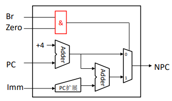

MIPS单周期数据通路
概述
计算机的五大组成部分
- 控制器
- Datapath
- 内存
- 输入
- 输出
|---------------------------------------------------------|
| Computer |
| |-------------| |----------------| |--------------| |
| | Processor | | Memory | | Devices | |
| | |---------| | | | | |----------| | |
| | | Control | | | | | | Input | | |
| | |("brain")| | | | | |----------| | |
| | |---------| | | | | | |
| | |---------| | | | | |----------| | |
| | | Datapath| | | | | | Output | | |
| | |("brawn")| | | | | |----------| | |
| | |---------| | | | | | |
| |-------------| |----------------| |--------------| |
|---------------------------------------------------------|
处理器
处理器（CPU）：执行寄存器中的指令
- Datapath:处理器的一部分，包含处理器执行操作必要的硬件
- 控制器：处理器的一部分，告诉Datapath需要做什么
MIPS-lite 指令子集
- ADDU and SUBU
addu rd, rs, rtsubu rd, rs, rt
- OR Immediate:
ori rt, rs, imm16
- LOAD and STORE Word
lw rt, rs, imm16sw rt, rs, imm16
- BRANCH:
beq rs, rt, imm16
寄存器传输语言（RTL）
- 均以读取指令开始：
- R-格式：
{op, rs, rt, rd, shamt, funct} <- MEM[ PC ] - I-格式：
{op, rs, rt, imm16} <- MEM[ PC ]
- R-格式：
- RTL给了指令的含义：
ADDU R[rd] <- R[rs] + R[rt]; PC <- PC + 4SUBU R[rd] <- R[rs] – R[rt]; PC <- PC + 4ORI R[rt] <- R[rs] | zero_ext(imm16); PC <- PC + 4LOAD R[rt] <- MEM[R[rs] + sign_ext(imm16)]; PC <- PC + 4STORE MEM[R[rs] + sign_ext(imm16)] <- R[rt]; PC <- PC + 4BEQ if ( R[rs] == R[rt] )then PC <- PC + 4 + (sign_ext(imm16) || 00)??????????else PC <- PC + 4
CPU开发过程概述
- 分析每条指令的RTL，梳理和总结出数据通路的设计需求
- 选择恰当的数据通路功能部件
- 组装数据通路根据指令RLT，分析并建立功能部件间的正确连接关系
- 根据指令RTL，分析功能部件应执行的功能，反推相应的控制信号取值
- 生成控制器
- 构造控制信号真值表，然后推导出控制信号的最简表达式
- 根据最简表达式构造门电路
单周期CPU设计模型
第一步 指令集功能需求
- 存储器(MEM)
- 指令存储器 & 数据存储器(分离的存储器模拟了
cache结构) - 指令存储器只有读取数据（取指令）
- 数据存储器既有读取数据又有写入数据
- 指令存储器 & 数据存储器(分离的存储器模拟了
- 寄存器堆(32个32位寄存器)
- 能同时读出
rs和rt两个寄存器 - 可以写数据至
rt或rd寄存器
- 能同时读出
- PC
- 下一条指令地址的计算单元
- 扩展立即数：符号/零扩展
- 执行运算的计算单元
Add/Sub/OR等- 执行beq的比较操作
| 中文 | 英文 | 缩写 |
|---|---|---|
| 数据存储器 | Data Memory | DM |
| 指令存储器 | Instruction Memory | IM |
| 寄存器堆 | Register File | RF |
| 程序计数器 | Program Counter | PC |
| 下指令地址 | Next PC | NPC |
| 扩展单元 | Extender | EXT |
| 算数逻辑单元 | Arithmetic Logic Unit | ALU |
| #### 指令执行的主要步骤 |
取指令、译码/读操作数、执行、访存、回写
 1. 取指令
- 功能1：PC驱动IM输出指令
- 功能2：PC驱动NPC计算下一个PC值
2. 译码/读操作数
- 功能1：IM驱动控制器（图中未画）分析指令的
1. 取指令
- 功能1：PC驱动IM输出指令
- 功能2：PC驱动NPC计算下一个PC值
2. 译码/读操作数
- 功能1：IM驱动控制器（图中未画）分析指令的opcode和funct域
- 功能2：IM驱动RF读出2个寄存器值
3. 执行
- RF输出的寄存器值驱动ALU完成相应的计算
- 算数运算(+，-，*，/)，移位，逻辑(&,|)，比较(slt,\=\=)
- 同时还承担计算lw和sw的地址（复用运算器）
4. 访存
- lw：DM输入地址后，就输出数据
- sw：DM有2个输入，地址&要写入的数据
- ==只有lw和sw指令在该环节有实际操作，其他指令不涉及该环节==
5. 回写
- 操作：写ALU计算结果或数据存储器读出的数据至寄存器堆
- beq、jal、jr、sw不涉及该环节
数据通路基础部件建模
MUX
复用器Multiplexer(MUX)：选择N个输入中的一个与输出相连接，有一个\(\log_2N\)位的控制信号作为选择信号输入。
- 1位2选1MUX表达式：
Y = !S & D0 + S & D1 -
1位4选1MUX表达式：
Y = !S0 & !S1 & D0 +!S0 & S1 & D1 +S0 & !S1 & D2 +S0 & S1 & D3 -
32位4选1MUX表达式：
- 就是32个4选1MUX
- Verilog表达式为
assign Y = !S0 & !S1 & D0 +!S0 & S1 & D1 +S0 & !S1 & D2 +S0 & S1 & D3;
存储元件：寄存器
有一个N位数据输入和N位的数据输出，一个写入激活输入信号
写入激活： - 如果是0，则输出不会改变 - 如果是1，则输入将在时钟沿（CLK信号输入由0变为1时）时复制到输出
1位寄存器
module d_ff(d, q, clk);
input d, clk;
output q;
reg r;
assign q = r;
always @(posedge clk)
r <= d;
endmodule
1位写使能D寄存器
module d_ff(d, we, q, clk);
input d, we;
output q;
input clk;
reg r;
assign q = r;
always @(posedge clk)
if (we)
r <= d;
完整写法要加上
if (we)
r <= d;
else
r <= r;
不过对于缺少的分支，编译器会自动补充，所以可以不写
1位写使能D异步复位寄存器
module d_ff(d, we, q, clk, rst);
input d, we;
output q;
input clk, rst;
reg r;
assign q = r;
always @(posedge clk or posedge rst)
if (rst)
r <= 1'b0;
else if (we)
r <= d;
endmodule
异步指的是rst在不论clk是否输入处于时钟沿时，只要被触发就会复位，同步即只有当处于时钟沿时rst被触发才复位
32位写使能寄存器
module d32(d, we, q, clk);
input [31:0] d;
input we;
output [31:0] q;
input clk;
reg [31:0] r;
assign q = r;
always @(posedge clk)
if (we)
r <= d;
endmodule
用generate-for建模。Verilog-2001标准
module d32(d, we, q, clk);
input [31:0] d;
input we;
output [31:0] q;
input clk;
genvar i;
generate
for (i = 0; i < 32; i = i + 1)
begin: lable_d
d_ff u_dff(d[i], we, q[i], clk);
end
endgenerate
endmodule
数据通路基础部件建模
PC
PC本质上就是一个32位的寄存器 - 因为每条指令占用4B，所以PC的b1与b0恒为0 - 32位寄存器可以优化为30位寄存器
PC需要在系统复位后有一个确定的初值，即第1条指令的地址
| 功能描述 | Reset有效，寄存器置初值0x0000_0000。 | |
|---|---|---|
| 信号名 | 方向 | 描述 |
| CLK | I | MIPS-C处理器时钟 |
| Reset | I | 复位信号 |
| D1[31:0] | I | 32位输入 |
| D0[31:0] | O | 32位输出 |
NPC（增加对jal和jr的支持）
任何指令的第一步除了取指令外，还要更新PC，更新PC，首先是NPC要计算出下一条指令的地址
| 指令 | NPC执行的计算 | |
|---|---|---|
顺序执行的指令addu/subu/ori/lw/sw |
PC+4 |
|
分支或跳转指令beq/jal/jr |
beq |
与PC和imm16相关 |
jal |
与PC和imm26相关 |
|
jr |
与rs的32位值相关 |
| 信号名 | 方向 | 描述 |
|---|---|---|
PC[31:0] |
Input |
当前指令的地址 |
imm26[25:0] |
I | jal：26位偏移 |
A32[31:0] |
I | jr：保存的32位目标地址 |
NPC[31:0] |
Output |
下一条指令的地址 |
NPCOp[1:0] |
I | NPC计算模式的控制码 |
NPC的输入信号不充分，因为
beq可以不跳转
| 信号名 | 方向 | 描述 |
|---|---|---|
PC[31:0] |
I | 当前指令的地址 |
imm26[25:0] |
I | jal：26位偏移 |
A32[31:0] |
I | jr：保存的32位目标地址 |
NPC[31:0] |
O | 下一条指令的地址 |
NPCOp[1:0] |
I | NPC计算模式的控制码 |
Zero |
I | rs与rt相等的比较结果 |
寄存器堆
寄存器堆包含32个寄存器
- RD1和RD2：读出的2个寄存器值
- WD：写回的值
寄存器编号
- A1和A2：读取的第1个和第2个寄存器的编号
- A3：写入的寄存器编号
写使能
- 并非所有的指令都要写寄存器，因此寄存器堆需要有写使能信号Wr
- 在时钟上升沿时，如果Wr=1，则WD3才能被写入A3寄存器中
与指令存储类似，寄存器堆执行读出操作时可视为组合逻辑
- A1/A2有效一段时间后，RD1/RD2就输出正确的值
寄存器堆的设计：
- 内部需要多少个32位寄存器：31个。0号寄存器采用接地的特殊设计
- 读出数据功能：32位31选1MUX
- 2个读出端口是独立工作
- 写入数据功能：关键是写使能
- 每个寄存器需要一个写使能
- DEMUX：分离器/解码器
- N位编码产生\(2^N\) 个输出
- 有且仅有1个输出有效
Verilog建模RF
- 用行为建模方法建模RF
- RF写入语句利用了RW是输入信号（即RW是变值）这一特性
module RF(A1, A2, A3, WD, WE, clk, RD1, RD2);
input A1, A2, WE, clk;
input [31:0] WD, A3;
output [31:0] RD1, RD2;
reg [31:0] rf[31:1];
always @(posedeg clk)
if (WE)
rf[A3] <= WD;
assign RD1 = (A1 == 0) ? 32'b0 : rf[A1];
assign RD2 = (A2 == 0) ? 32'b0 : rf[A2];
endmodule
指令存储器
存储器可以理解为一个数组 - 存储器的地址就是数组的下标 - 给出存储器地址，存储器就输出对应单元的数据
执行读出操作时，存储器行为可视为组合逻辑
- 地址A有效一段时间（访问时间）后，数据RD就输出正确的值
数据存储器
与指令存储器不同，数据存储器要支持写入
- WD：写入的数据
写使能
- 与寄存器堆类似，数据存储器需要有写使能信号Wr
存储器访问
- 读：Wr=0，A单元数据从RD输出，读出操作时可视为组合逻辑，即A有效一段时间后，RD就输出正确的值
- 写：在时钟上升沿时，如果Wr=1，则WD被写入A单元中
CLK只对写操作有效，对读操作无效
Verilog建模存储器
- 建模要点：内部是reg阵列
- 时序特点：写入的数据滞后1个cycle输出
module MEM4KB(A, D1, We, D0, clk);
input [9:0] A;
input [31:0] D1;
input We;
output [31:0] D0;
input clk;
reg [31:0] array[1023:0];
assign D0 = array[A];
always @(posedge clk)
if (We)
array[A] <= D1;
endmodule
ALU
ALU需求分析
-
计算需求：加、减、或、相等
-
相等
- 方法1：设计独立的比较电路，例如利用
XOR运算 - 方法2：执行减法运算，然后再判断结果是否全0
- 方法1：设计独立的比较电路，例如利用
| 指令 | RTL描述 |
|---|---|
addu |
R[rd] <- R[rs] + R[rt]; PC <- PC + 4 |
subu |
R[rd] <- R[rs] – R[rt]; PC <- PC + 4 |
ori |
R[rt] <- R[rs] \| zero_ext(imm16); PC <- PC + 4 |
lw |
R[rt] <- MEM[R[rs] + sign_ext(imm16)]; PC <- PC + 4 |
sw |
MEM[R[rs] + sign_ext(imm16)] <- R[rt]; PC <- PC + 4 |
beq |
if ( R[rs] == R[rt] ) then PC <- PC + 4 + (sign_ext(imm16) \|\| 00) else PC <- PC+4 |
减法运算
计算Y=A-B，可以将其等价转换为Y=A+(-B)
\(Y = A − B = A + \overline{B} + 1\)
可以利用加法器构造减法运算 - B输入取反 - Cin为1
相等
采用重用减法的思路：先执行减法，然后再判断结果是否全0
Zero
- 0:A!=B
- 1:A=B
集成
M1：0通道对应加法，1通道对应减法 M2：0通道对应加减法的结果，1通道对应OR的结果 Cin：如果执行加法则为0，如果执行减法则为1
VerilogHDL建模4位加法与减法
- 4位加法（无overflow检测）
module add4(a, b, c);
input [3:0] a, b;
output [3:0] c;
assign c = a + b;
endmodule
- 4位减法（采用二进制补码运算方法，即加相反数）
module sub4(a, b, c);
input [3:0] a, b;
output [3:0] c;
assign c = a + ~b + 1'b1; // assign c = a - b;
endmodule
VerilogHDL建模4位ALU
- ALU的功能：加、减、或，加/减不支持
overflow op：控制信号- 00~加法；01~减法；10~或；11~保留
- 建模方法：利用assign语句实现加法与减法的2选1
define ALU_ADDU 2'b00
define ALU_SUBU 2'b01
define ALU_OR 2'b10
module ALU(a, b, c, op);
input [3:0] a, b;
input [1:0] op;
output [3:0] c;
assign c = (op == ALU_ADDU) ? (a + b) : // 加
(op == ALU_SUBU) ? (a - b): // 减
(op == ALU_OR) ? (a | b): // 或
4'b0000; // 保留
endmodule
组装数据通路
每条指令都有各自的功能需求，对应的功能部件及其连接关系也是不同的，数据通路就是所有功能部件及其连接关系的集合
如何根据RTL需求组装数据通路？ 根据指令的RTL，选取和添加相应的部件，并建立正确的连接关系 重复上述过程
数据通路的共性阶段
所有指令都需要：取指令（IF）
- PC驱动IM，IM输出指令
- PC驱动NPC，NPC计算PC+4然后再输出至PC（目的是更新PC）
先假设所有指令都是顺序执行的
32位指令的分解
将指令的32位信号分解为各个域 原理：类似于一路入户电分成多路室内电
ADDU & SUB
ADDU：R[rd] <- R[rs] + R[rt]
- 硬件需求
- 寄存器堆：2路读出信号，1路写回信号
- ALU：执行加/减
- 连接
- 寄存器堆的输出 <-> ALU的输入
- 指令分解出的rs/rs/rd <-> 寄存器堆的A1/A2/A3
- 寄存器堆的写使能 <-> RFWr；ALU的控制码 <-> ALUOp
ORI
ORI：R[rt] <- R[rs] OR zero_ext(imm16)
- 硬件需求
- zero_ext()：这是一个新的计算需求，原有的功能部件无法满足该需求
- EXT：新增功能部件，用于将16位数进行0扩展为32位数
| 信号名称 | 方向 | 描述 |
|---|---|---|
imm16[15:0] |
输入 | 16位输入 |
ext[31:0] |
输入 | 32位0扩展结果 |
| HDL建模 |
module EXT (imm16, ext);
input [15:0] imm16;
output [31:0] ext;
assign ext = {16{0}, imm16};
endmodule
LW
LW：R[rt] <- MEM[R[rs] + sign_ext(imm16)]
- 硬件需求
- sign_ext()：这是一个新的计算需求，EXT无法满足该需求
- zero_ext()与sign_ext()，其输入位数、输出位数及基本目的均相同
- 根据“高内聚、低耦合”原则，由EXT同时实现两种扩展较为合理，由于EXT同时支持两种扩展，因此必须增加控制信号EXTOp
- 需要DM
- 需要回写RF
| 信号名称 | 方向 | 描述 |
|---|---|---|
imm[15:0] |
输入 | 16位输入 |
EXTOp |
输入 | 扩展功能选择0:符号拓展1:无符号拓展 |
ext[31:0] |
输出 | 32位0扩展结果 |
HDL建模
module EXT(imm, F, ext);
input [15:0] imm;
input F;
output [31:0] ext;
assign ext = F == 1 ? {16{0}, imm} : {16{imm[15]}, imm}
endmodule
SW
SW：MEM[R[rs] + sign_ext(imm16)] <- R[rt]
- 连接
- RF的第2个输出 <-> DM的WD
BEQ
if (R[rs] == R[rt])
PC <- Pc + 4 + sign_ext(imm16 || 00)
else
PC <- PC + 4
本质上，beq涉及2大功能
- 功能1：寄存器比较
- 让ALU执行减法，然后把比较结果zero传递给NPC
- 功能2：根据比较的结果计算PC
- 这属于NPC的功能范畴
对于NPC，现在需要知道当前指令是否是beq及zero的结果
| 信号名 | 方向 | 描述 |
|---|---|---|
PC[31:0] |
I | 32位输入 |
Imm[15:0] |
I | 16位立即数 |
Br |
I | beq指令标志 1：当前指令是beq 0：当前指令不是beq |
Zero |
I | rs和rt相等标志 1：相等 0：不等 |
NPC[31:0] |
O | 32位输出 |

组装